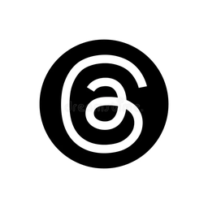

⚡ Cào ngay?
Chọn nền tảng và thiết lập thông tin để bắt đầu cào video.
📹
Video hôm nay
—
—
📥
Đang tải
—
trong hàng đợi
✅
Đã hoàn thành
—
đã xử lý xong
⚠️
Lỗi
—
hàng đợi render
🕐
Thời gian chạy
—
Sẵn sàng
🔑 Đăng nhập nền tảng
(chỉ lần đầu — bấm vào thẻ để mở web đăng nhập, xong đóng cửa sổ là lưu)
● Xanh ✓ = đã đăng nhập ·
● Đỏ ✕ = chưa đăng nhập ·
● Vàng ! = đang mở / bị khóa / chưa rõ ·
● Xám – = không cần đăng nhập (yt-dlp)
Chọn nền tảng
✓
Douyin0 đã cào✓
Bilibili0 đã cào✓
Xiaohongshu0 đã càoRedNote (gồm cả xiaohongshu.com)✓
Weibo (ảnh)0 đã cào✓
YouTube0 đã cào✓
TikTok0 đã cào✓

✓
Twitter (X)0 đã cào✓
Instagram0 đã cào✓
Redditchụp + sub ảnh✓

Cách cào
Từ khóa
Nhật ký hoạt động
Tiến trình
0/0 video
0%
Sẵn sàng
Tốc độ: —
Ước tính còn: —
📋 Hàng đợi tải
—
📁 File đã tải?
Video đã tải về (bản gốc). Bấm để phát. Muốn xử lý (né bản quyền / phụ đề / lồng tiếng) → tab 🎬 Render; bản render xong nằm ở tab 🎬 Đã render.
🔍
Ctrl K
🎬 Render
0 video · 0 phút · 0 MBVideo nguồn
Cắt đầu (giây)
Cắt cuối (giây)
Tỉ lệ khung
Chữ watermark
Logo
chưa có
📂 Thư mục lưu (trống = cạnh video gốc)
📥 Hàng đợi Render
🌐 Ngôn ngữ đầu ra (Output Languages)
Đã chọn 0 / 74 ngôn ngữ
🌐 Mỗi ngôn ngữ = 1 video riêng. Chọn giọng cho từng ngôn ngữ ở cột Giọng; engine tự hợp lý (offline/online) theo ngôn ngữ. Video gốc được giữ nguyên.
🎙 Lấy lời thoại
OCR = chữ trên video (chính xác nhất).
🔉 Âm lượng gốc 20%
0% = chỉ giọng dịch.
Tùy chọn
✍️ Viết lại phong cách ?
Chỉ cho video ĐÃ review (có lời kể).
📥 Chọn video nguồn
🔍
0 video đã chọn · 0 MB
🚀 Tăng tốc GPU (nâng cao)
Đang kiểm tra…
✂️ Băm nhỏ?
Cắt video dài → nhiều clip ngắn theo cảnh (PySceneDetect), tùy chọn khung 9:16.
Đưa video vào để băm — chọn từ máy của bạn hoặc từ video đã tải:
Số bản (chia đều + dời về cảnh)
Khung hình
Độ nhạy cắt cảnh
🔐 Khách hàng
Lưu thông tin nhạy cảm của khách (tài khoản đăng nhập, cookie/token). Các trường nhạy cảm được mã hóa (Fernet) trong CSDL; khóa giải mã để ngoài git. ⚠️ Dự án học tập.
➕ Thêm khách
← Chọn một khách để xem & thêm tài khoản nhạy cảm.
🕘 Lịch sử cào?
Mọi bài đã cào (kể cả theo kênh) — lọc & tìm. Bài đã tải làm mờ; lỡ xoá → bấm Tải lại.
👁 Theo dõi kênh?
Dán link kênh để theo dõi → mỗi kênh 1 ô; bấm ô để xem video mới của kênh đó.
👤 Kênh nguồn?
Ném link kênh → xem như trang cá nhân → gán trang đăng + đặt lịch → mỗi ngày tự tải N video rồi tự đăng LLN Page.
🔀 Quy trình?
Tạo chuỗi xử lý tự động — mỗi bước lấy kết quả bước trước. Bật/tắt từng bước; bước thiếu đầu vào sẽ tự khoá. Lưu nhiều quy trình để dùng lại.
📖 Hướng dẫn sử dụng (bấm để mở/đóng)
Quy trình là một dây chuyền: video chạy lần lượt qua các bước, bước sau dùng kết quả bước trước.
- ① Nguồn video — lấy video từ đâu:
- 📁 Video đã tải: dùng video đã cào sẵn (chưa render).
- 🔍 Cào từ khóa: nhập từ khóa → có ⏰ Hẹn giờ tự cào theo lịch (mỗi ngày/mỗi giờ).
- 🔗 Nhập link: dán link video.
- 👤 Theo kênh: dán link kênh → có 👁 Theo dõi canh kênh, có video mới tự tải.
- 📂 Folder: lấy video từ thư mục trong máy.
- ② Băm nhỏ (tùy chọn) — cắt video dài thành nhiều clip ngắn.
- ③ Render — dịch + lồng tiếng + che chữ gốc + xuất video hoàn chỉnh (giọng/logo theo tab 🎬 Render).
Cách dùng: bấm vào 1 bước (cột trái) → cấu hình hiện bên phải. Gạt công tắc trên thẻ để bật/tắt bước. Bấm ▶ Chạy để chạy ngay — nhật ký hiện ở khung dưới.
Tự động hóa: bật ⏰ Hẹn giờ (Cào) hoặc 👁 Theo dõi (Kênh) để tự lấy video; bật công tắc 🔄 Tự động chạy để video mới về tự render. Kết hợp = chạy hoàn toàn tự động.
Mẹo: đặt tên rồi bấm 💾 Lưu để lưu quy trình (vd "Cào→Render", "Video sẵn→Render"); lần sau chọn lại ở ô Quy trình để dùng nhanh.
💾 Quy trình:
🔁 Tự động hóa quy trình
Đặt lịch + giờ để quy trình tự chạy, không cần bấm tay. (Tự cào theo nguồn + tự render.)
📜 Nhật ký chạy
Chưa chạy. Bấm ▶ để bắt đầu — nhật ký từng bước hiện ở đây.
📤 Đăng bài theo trang?
📣 Đăng Facebook TỰ ĐỘNG qua LLN Page
Mỗi trang = 1 Page Facebook. Chọn Kênh (Kiểu 1) và/hoặc Thể loại (Kiểu 2 — folder phân loại đã có video render) → bấm Gom: video + caption tự đẩy vào
<Tên trang>_<Page ID>/ để LLN Page đăng. Cần cài LoHa Page để đăng.👉 LLN Page: 📞 0865.060.530 · 🌐 lohatech.vn
🔗 Nối LLN Page (đăng Facebook tự động)
Trỏ tới thư mục uploads của LLN Page. Đặt 1 lần — dùng chung cho CẢ Kênh nguồn LẪN Phân loại. Khi Gom, video + caption tự đẩy vào
<Tên trang>_<Page ID>/ để LLN tự đăng. Để TRỐNG = chỉ gom vào dang_bai/. Mỗi trang cần điền Page ID Facebook (≥5 số) bên dưới.⚙️ Chất lượng render đặt riêng cho từng trang — bấm 🎬 Cấu hình render trên mỗi trang bên dưới.
👉 Bật cả 2 = chuỗi tự động hoàn chỉnh: mỗi ngày tự tải video mới của kênh → render → gom → LLN đăng. KHỎI bấm gì.
⚙️ Cài đặt
🌐 Đổi ngôn ngữ giao diện và ngôn ngữ đích nội dung ở góc trên bên phải (header).
📁 Thư mục lưu video
Nơi lưu video đã cào + video đã render. Để ở đây cho BỀN qua mỗi lần cập nhật (không bị mất). Nên chọn ổ còn nhiều dung lượng (vd
D:\ViralCrawl).
…
⚡ Tăng tốc render lại (cache)
Lưu lại phụ đề + giọng đã sinh để khi render lại cùng 1 video (đổi logo/khung/giọng…) KHÔNG phải nghe + dịch + lồng tiếng lại. Chất lượng giữ nguyên 100% (không đụng encode). Cache tự xoá sau 1 ngày không dùng.
🔑 Khóa cho AI (API Keys)
Dán key AI để dịch phụ đề hoặc để Trợ lý AI ra lệnh giúp bạn. Dùng Gemini, Groq (tốt nhất) hoặc Ollama Cloud. (Dịch phụ đề bằng AI mặc định của tool thì KHÔNG cần key.)
➕ Thêm khóa AI — dán vào ô bên dưới, tool tự nhận diện:
🔑 Khóa đã thêm — quota & token hôm nay (tự xoay khi 1 key hết · mã hóa DPAPI)
🤖 Trợ lý AI?
Nhắn yêu cầu bằng lời — AI tự cào / tìm kênh giúp bạn.
Trợ lý chat cần 1 key Groq (
gsk_…) — dán ở ô ➕ Thêm khóa AI phía trên (chung 1 chỗ nhập key).💎 Bảng Giá
Kích hoạt một lần — Sở hữu vĩnh viễn. Liên hệ admin để nâng cấp — Zalo 0865.060.530.
🎫 Gói của tôi
Đang tải…
Nâng cấp gói
Liên hệ admin để nâng cấp — Zalo 0865.060.530. Sau khi admin nâng, bấm Làm mới gói.